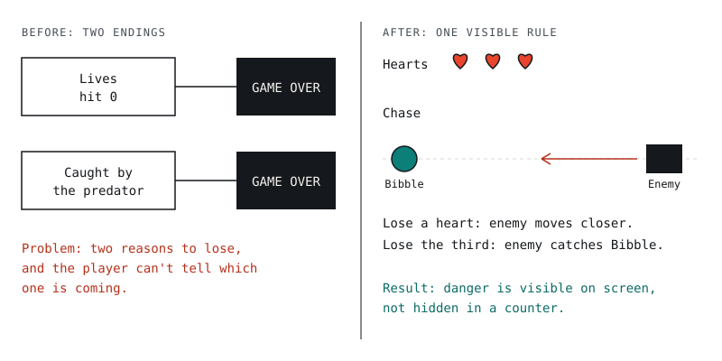

Game design · Process analysis
Bibble's Great Escape: rebuilding a game around one readable rule
A redesign of Ant Lion into a side-scrolling runner, from analysis to first playable.
Process analysis
-
Problem
Our brief was to redesign Ant Lion, an older Flash and Unity game. We started by playing the original and listing what the player does, what the game tells them, and what happens when they fail. The rules were spread across several systems, so we could not say in one sentence what the game was about.
-
Direction
We reworked it into a side-scrolling runner in which Bibble is fleeing a predator. Boiling the premise down to “run, don't get caught” gave the team one test for every idea: does it make the chase easier to read or more tense?
-
Iteration
Our first fail states were the weak point. “Lose all three lives” and “get caught by the predator” were separate endings, and players could not tell them apart, therefore, we merged them. The player has three hearts, each lost heart brings the enemy closer, and losing the third means the enemy catches Bibble. Danger is now visible on screen instead of hidden in a corner. As level designer, I used that rule to shape layouts: obstacles have to be readable early, because every mistake has a visible cost.
-
Audience
We also revisited who we were designing for. Our first framing used achiever and explorer player types. We added people in their twenties who are engaged in meme culture, which favours short runs and failure that is obvious at a glance.
-
Where it stands
The project is now in the prototype phase: a first playable and a refined game design document with a playtesting report. It shows how I work. I reduce a messy problem to one rule, test every decision against it, and change the design when the evidence says it is not working.
Artifacts
